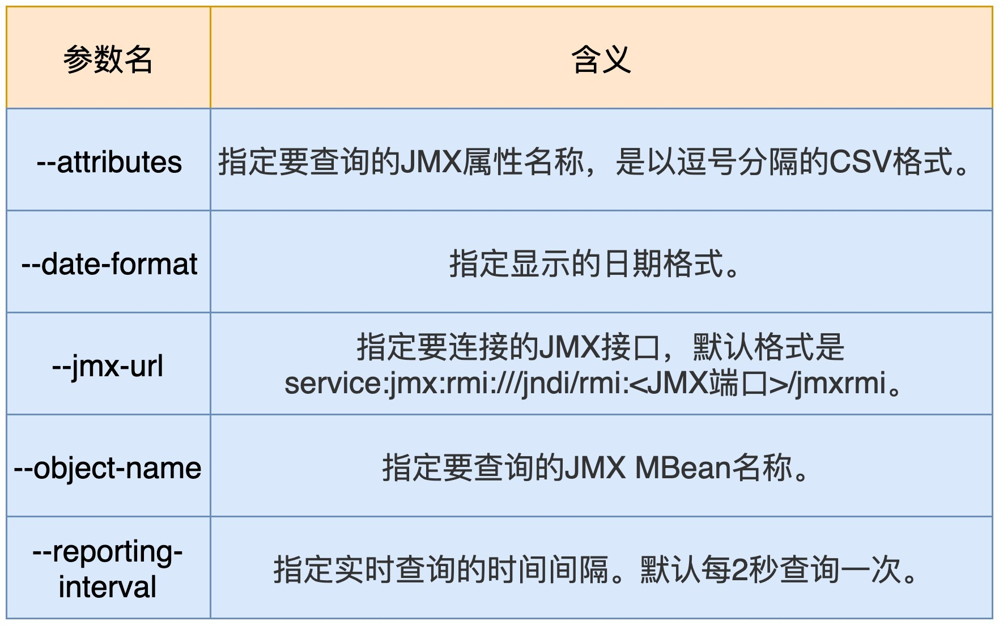
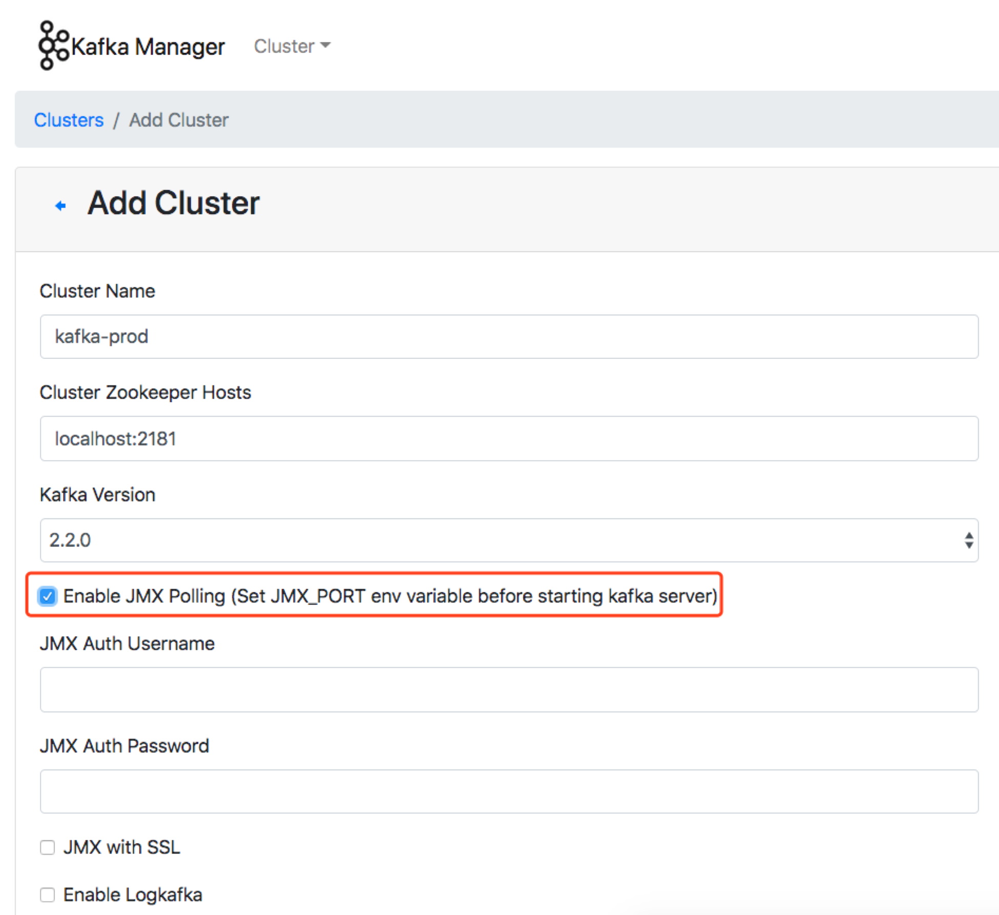
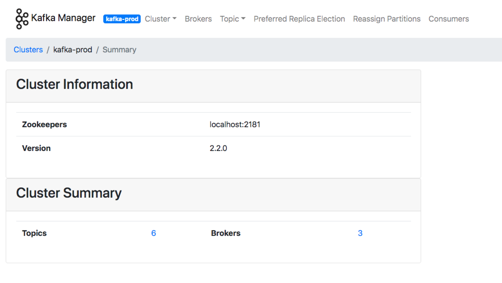
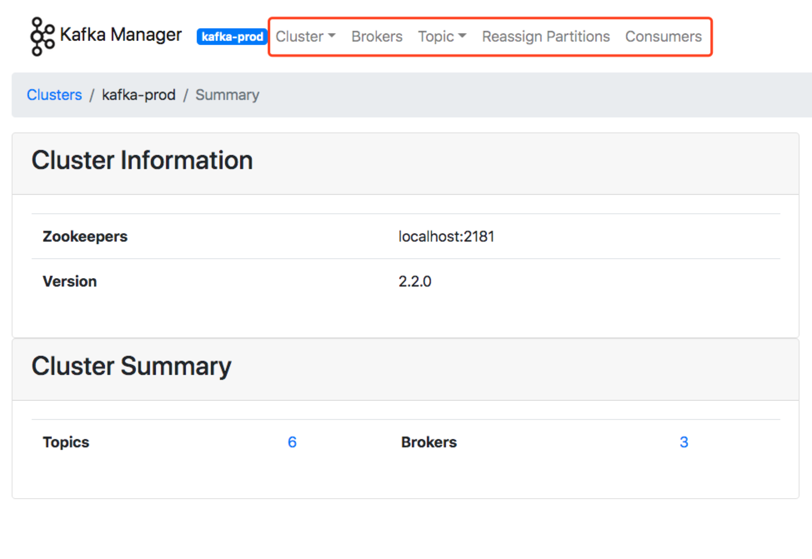
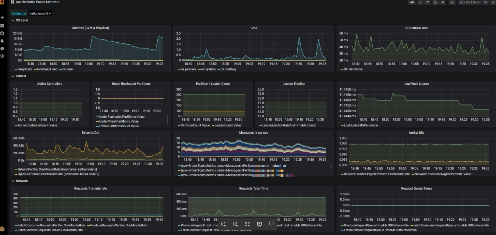
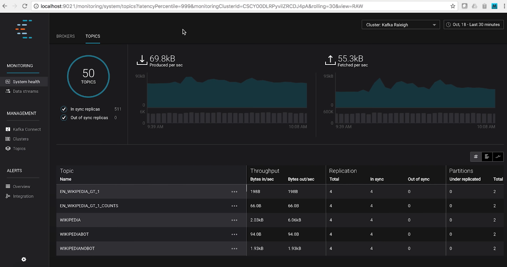
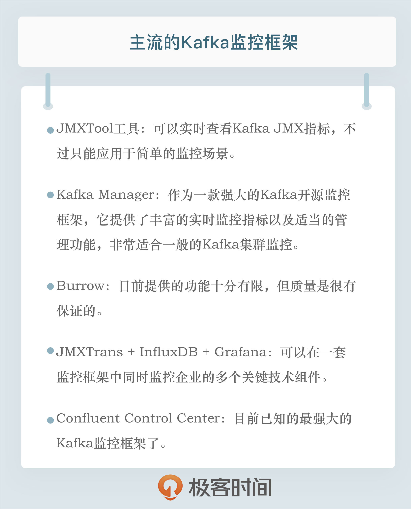

- 00 开篇词 为什么要学习Kafka？.md.html
- 01 消息引擎系统ABC.md.html
- 02 一篇文章带你快速搞定Kafka术语.md.html
- 03 Kafka只是消息引擎系统吗？.md.html
- 04 我应该选择哪种Kafka？.md.html
- 05 聊聊Kafka的版本号.md.html
- 06 Kafka线上集群部署方案怎么做？.md.html
- 07 最最最重要的集群参数配置（上）.md.html
- 08 最最最重要的集群参数配置（下）.md.html
- 09 生产者消息分区机制原理剖析.md.html
- 10 生产者压缩算法面面观.md.html
- 11 无消息丢失配置怎么实现？.md.html
- 12 客户端都有哪些不常见但是很高级的功能？.md.html
- 13 Java生产者是如何管理TCP连接的？.md.html
- 14 幂等生产者和事务生产者是一回事吗？.md.html
- 15 消费者组到底是什么？.md.html
- 16 揭开神秘的“位移主题”面纱.md.html
- 17 消费者组重平衡能避免吗？.md.html
- 18 Kafka中位移提交那些事儿.md.html
- 19 CommitFailedException异常怎么处理？.md.html
- 20 多线程开发消费者实例.md.html
- 21 Java 消费者是如何管理TCP连接的.md.html
- 22 消费者组消费进度监控都怎么实现？.md.html
- 23 Kafka副本机制详解.md.html
- 24 请求是怎么被处理的？.md.html
- 25 消费者组重平衡全流程解析.md.html
- 26 你一定不能错过的Kafka控制器.md.html
- 27 关于高水位和Leader Epoch的讨论.md.html
- 28 主题管理知多少.md.html
- 29 Kafka动态配置了解下？.md.html
- 30 怎么重设消费者组位移？.md.html
- 31 常见工具脚本大汇总.md.html
- 32 KafkaAdminClient：Kafka的运维利器.md.html
- 33 Kafka认证机制用哪家？.md.html
- 34 云环境下的授权该怎么做？.md.html
- 35 跨集群备份解决方案MirrorMaker.md.html
- 36 你应该怎么监控Kafka？.md.html
- 37 主流的Kafka监控框架.md.html
- 38 调优Kafka，你做到了吗？.md.html
- 39 从0搭建基于Kafka的企业级实时日志流处理平台.md.html
- 40 Kafka Streams与其他流处理平台的差异在哪里？.md.html
- 41 Kafka Streams DSL开发实例.md.html
- 42 Kafka Streams在金融领域的应用.md.html
- 加餐 搭建开发环境、阅读源码方法、经典学习资料大揭秘.md.html
- 结束语 以梦为马，莫负韶华！.md.html
37 主流的Kafka监控框架
你好，我是胡夕。今天我要和你分享的主题是：那些主流的 Kafka 监控框架。
在上一讲中，我们重点讨论了如何监控 Kafka 集群，主要是侧重于讨论监控原理和监控方法。今天，我们来聊聊具体的监控工具或监控框架。
令人有些遗憾的是，Kafka 社区似乎一直没有在监控框架方面投入太多的精力。目前，Kafka 的新功能提议已超过 500 个，但没有一个提议是有关监控框架的。当然，Kafka 的确提供了超多的 JMX 指标，只是，单独查看这些 JMX 指标往往不是很方便，我们还是要依赖于框架统一地提供性能监控。
也许，正是由于社区的这种“不作为”，很多公司和个人都自行着手开发 Kafka 监控框架，其中并不乏佼佼者。今天我们就来全面地梳理一下主流的监控框架。
JMXTool 工具
首先，我向你推荐 JMXTool 工具。严格来说，它并不是一个框架，只是社区自带的一个工具罢了。JMXTool 工具能够实时查看 Kafka JMX 指标。倘若你一时找不到合适的框架来做监控，JMXTool 可以帮你“临时救急”一下。
Kafka 官网没有 JMXTool 的任何介绍，你需要运行下面的命令，来获取它的使用方法的完整介绍。
bin/kafka-run-class.sh kafka.tools.JmxTool
JMXTool 工具提供了很多参数，但你不必完全了解所有的参数。我把主要的参数说明列在了下面的表格里，你至少要了解一下这些参数的含义。

现在，我举一个实际的例子来说明一下如何运行这个命令。
假设你要查询 Broker 端每秒入站的流量，即所谓的 JMX 指标 BytesInPerSec，这个 JMX 指标能帮助你查看 Broker 端的入站流量负载，如果你发现这个值已经接近了你的网络带宽，这就说明该 Broker 的入站负载过大。你需要降低该 Broker 的负载，或者将一部分负载转移到其他 Broker 上。
下面这条命令，表示每 5 秒查询一次过去 1 分钟的 BytesInPerSec 均值。
bin/kafka-run-class.sh kafka.tools.JmxTool --object-name kafka.server:type=BrokerTopicMetrics,name=BytesInPerSec --jmx-url service:jmx:rmi:///jndi/rmi://:9997/jmxrmi --date-format "YYYY-MM-dd HH:mm:ss" --attributes OneMinuteRate --reporting-interval 1000
在这条命令中，有几点需要你注意一下。
- 设置 --jmx-url 参数的值时，需要指定 JMX 端口。在这个例子中，端口是 9997，在实际操作中，你需要指定你的环境中的端口。
- 由于我是直接在 Broker 端运行的命令，因此就把主机名忽略掉了。如果你是在其他机器上运行这条命令，你要记得带上要连接的主机名。
- 关于 --object-name 参数值的完整写法，我们可以直接在 Kafka 官网上查询。我们在前面说过，Kafka 提供了超多的 JMX 指标，你需要去官网学习一下它们的用法。我以 ActiveController JMX 指标为例，介绍一下学习的方法。你可以在官网上搜索关键词 ActiveController，找到它对应的 --object-name，即 kafka.controller:type=KafkaController,name=ActiveControllerCount，这样，你就可以执行下面的脚本，来查看当前激活的 Controller 数量。
$ bin/kafka-run-class.sh kafka.tools.JmxTool --object-name kafka.controller:type=KafkaController,name=ActiveControllerCount --jmx-url service:jmx:rmi:///jndi/rmi://:9997/jmxrmi --date-format "YYYY-MM-dd HH:mm:ss" --reporting-interval 1000
Trying to connect to JMX url: service:jmx:rmi:///jndi/rmi://:9997/jmxrmi.
"time","kafka.controller:type=KafkaController,name=ActiveControllerCount:Value"
2019-08-05 15:08:30,1
2019-08-05 15:08:31,1
总体来说，JMXTool 是社区自带的一个小工具，对于一般简单的监控场景，它还能应付，但是它毕竟功能有限，复杂的监控整体解决方案，还是要依靠监控框架。
Kafka Manager
说起 Kafka 监控框架，最有名气的当属 Kafka Manager 了。Kafka Manager 是雅虎公司于 2015 年开源的一个 Kafka 监控框架。这个框架用 Scala 语言开发而成，主要用于管理和监控 Kafka 集群。
应该说 Kafka Manager 是目前众多 Kafka 监控工具中最好的一个，无论是界面展示内容的丰富程度，还是监控功能的齐全性，它都是首屈一指的。不过，目前该框架已经有 4 个月没有更新了，而且它的活跃的代码维护者只有三四个人，因此，很多 Bug 或问题都不能及时得到修复，更重要的是，它无法追上 Apache Kafka 版本的更迭速度。
当前，Kafka Manager 最新版是 2.0.0.2。在其 Github 官网上下载 tar.gz 包之后，我们执行解压缩，可以得到 kafka-manager-2.0.0.2 目录。
之后，我们需要运行 sbt 工具来编译 Kafka Manager。sbt 是专门用于构建 Scala 项目的编译构建工具，类似于我们熟知的 Maven 和 Gradle。Kafka Manager 自带了 sbt 命令，我们直接运行它构建项目就可以了：
./sbt clean dist
经过漫长的等待之后，你应该可以看到项目已经被成功构建了。你可以在 Kafka Manager 的 target/universal 目录下找到生成的 zip 文件，把它解压，然后修改里面的 conf/application.conf 文件中的 kafka-manager.zkhosts 项，让它指向你环境中的 ZooKeeper 地址，比如：
kafka-manager.zkhosts="localhost:2181"
之后，运行以下命令启动 Kafka Manager：
bin/kafka-manager -Dconfig.file=conf/application.conf -Dhttp.port=8080
该命令指定了要读取的配置文件以及要启动的监听端口。现在，我们打开浏览器，输入对应的 IP:8080，就可以访问 Kafka Manager 了。下面这张图展示了我在 Kafka Manager 中添加集群的主界面。

注意，要勾选上 Enable JMX Polling，这样你才能监控 Kafka 的各种 JMX 指标。下图就是 Kafka Manager 框架的主界面。

从这张图中，我们可以发现，Kafka Manager 清晰地列出了当前监控的 Kafka 集群的主题数量、Broker 数量等信息。你可以点击顶部菜单栏的各个条目去探索其他功能。
除了丰富的监控功能之外，Kafka Manager 还提供了很多运维管理操作，比如执行主题的创建、Preferred Leader 选举等。在生产环境中，这可能是一把双刃剑，毕竟这意味着每个访问 Kafka Manager 的人都能执行这些运维操作。这显然是不能被允许的。因此，很多 Kafka Manager 用户都有这样一个诉求：把 Kafka Manager 变成一个纯监控框架，关闭非必要的管理功能。
庆幸的是，Kafka Manager 提供了这样的功能。你可以修改 config 下的 application.conf 文件，删除 application.features 中的值。比如，如果我想禁掉 Preferred Leader 选举功能，那么我就可以删除对应 KMPreferredReplicaElectionFeature 项。删除完之后，我们重启 Kafka Manager，再次进入到主界面，我们就可以发现之前的 Preferred Leader Election 菜单项已经没有了。

总之，作为一款非常强大的 Kafka 开源监控框架，Kafka Manager 提供了丰富的实时监控指标以及适当的管理功能，非常适合一般的 Kafka 集群监控，值得你一试。
Burrow
我要介绍的第二个 Kafka 开源监控框架是 Burrow。Burrow 是 LinkedIn 开源的一个专门监控消费者进度的框架。事实上，当初其开源时，我对它还是挺期待的。毕竟是 LinkedIn 公司开源的一个框架，而 LinkedIn 公司又是 Kafka 创建并发展壮大的地方。Burrow 应该是有机会成长为很好的 Kafka 监控框架的。
然而令人遗憾的是，它后劲不足，发展非常缓慢，目前已经有几个月没有更新了。而且这个框架是用 Go 写的，安装时要求必须有 Go 运行环境，所以，Burrow 在普及率上不如其他框架。另外，Burrow 没有 UI 界面，只是开放了一些 HTTP Endpoint，这对于“想偷懒”的运维来说，更是一个减分项。
如果你要安装 Burrow，必须要先安装 Golang 语言环境，然后依次运行下列命令去安装 Burrow：
$ go get github.com/linkedin/Burrow
$ cd $GOPATH/src/github.com/linkedin/Burrow
$ dep ensure
$ go install
等一切准备就绪，执行 Burrow 启动命令就可以了。
$GOPATH/bin/Burrow --config-dir /path/containing/config
总体来说，Burrow 目前提供的功能还十分有限，普及率和知名度都是比较低的。不过，它的好处是，该项目的主要贡献者是 LinkedIn 团队维护 Kafka 集群的主要负责人，所以质量是很有保证的。如果你恰好非常熟悉 Go 语言生态，那么不妨试用一下 Burrow。
JMXTrans + InfluxDB + Grafana
除了刚刚说到的专属开源 Kafka 监控框架之外，其实现在更流行的做法是，在一套通用的监控框架中监控 Kafka，比如使用JMXTrans + InfluxDB + Grafana 的组合。由于 Grafana 支持对JMX 指标的监控，因此很容易将 Kafka 各种 JMX 指标集成进来。
我们来看一张生产环境中的监控截图。图中集中了很多监控指标，比如 CPU 使用率、GC 收集数据、内存使用情况等。除此之外，这个仪表盘面板还囊括了很多关键的 Kafka JMX 指标，比如 BytesIn、BytesOut 和每秒消息数等。将这么多数据统一集成进一个面板上直观地呈现出来，是这套框架非常鲜明的特点。

与 Kafka Manager 相比，这套监控框架的优势在于，你可以在一套监控框架中同时监控企业的多个关键技术组件。特别是对于那些已经搭建了该监控组合的企业来说，直接复用这套框架可以极大地节省运维成本，不失为一个好的选择。
Confluent Control Center
最后，我们来说说 Confluent 公司发布的 Control Center。这是目前已知的最强大的 Kafka 监控框架了。
Control Center 不但能够实时地监控 Kafka 集群，而且还能够帮助你操作和搭建基于 Kafka 的实时流处理应用。更棒的是，Control Center 提供了统一式的主题管理功能。你可以在这里享受到 Kafka 主题和 Schema 的一站式管理服务。
下面这张图展示了 Control Center 的主题管理主界面。从这张图中，我们可以直观地观测到整个 Kafka 集群的主题数量、ISR 副本数量、各个主题对应的 TPS 等数据。当然，Control Center 提供的功能远不止这些，你能想到的所有 Kafka 运维管理和监控功能，Control Center 几乎都能提供。

不过，如果你要使用 Control Center，就必须使用 Confluent Kafka Platform 企业版。换句话说，Control Center 不是免费的，你需要付费才能使用。如果你需要一套很强大的监控框架，你可以登录 Confluent 公司官网，去订购这套真正意义上的企业级 Kafka 监控框架。
小结
其实，除了今天我介绍的 Kafka Manager、Burrow、Grafana 和 Control Center 之外，市面上还散落着很多开源的 Kafka 监控框架，比如 Kafka Monitor、Kafka Offset Monitor 等。不过，这些框架基本上已经停止更新了，有的框架甚至好几年都没有人维护了，因此我就不详细展开了。如果你是一名开源爱好者，可以试着到开源社区中贡献代码，帮助它们重新焕发活力。
值得一提的是，国内最近有个 Kafka Eagle 框架非常不错。它是国人维护的，而且目前还在积极地演进着。根据 Kafka Eagle 官网的描述，它支持最新的 Kafka 2.x 版本，除了提供常规的监控功能之外，还开放了告警功能（Alert），非常值得一试。
总之，每个框架都有自己的特点和价值。Kafka Manager 框架适用于基本的 Kafka 监控，Grafana+InfluxDB+JMXTrans 的组合适用于已经具有较成熟框架的企业。对于其他的几个监控框架，你可以把它们作为这两个方案的补充，加入到你的监控解决方案中。
